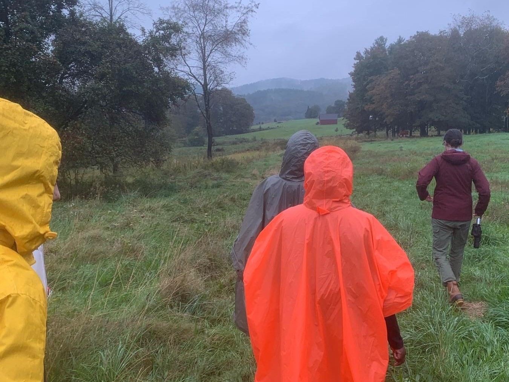
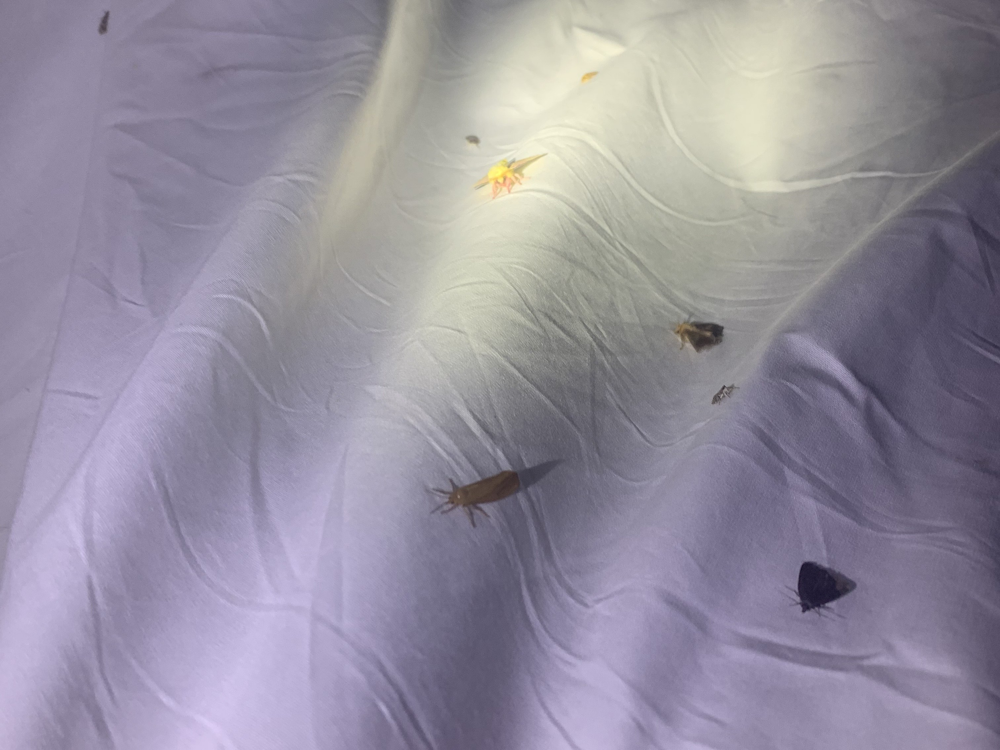
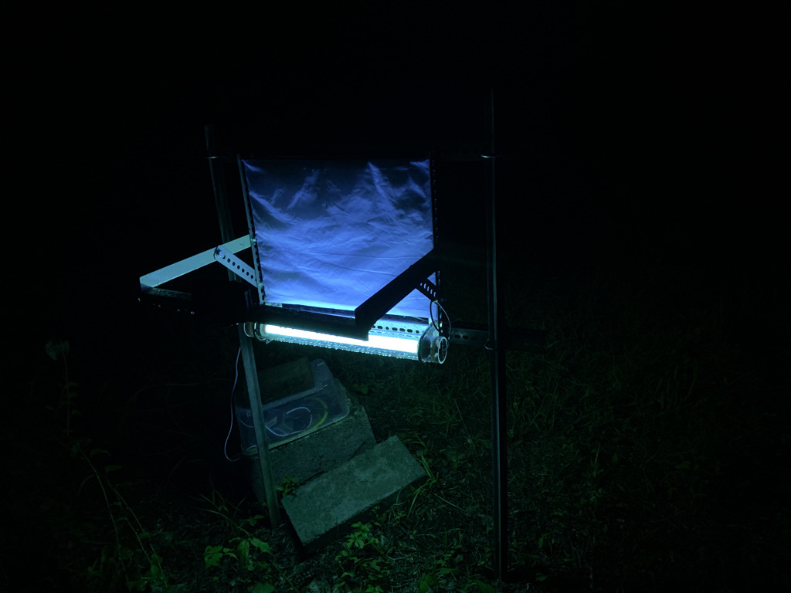
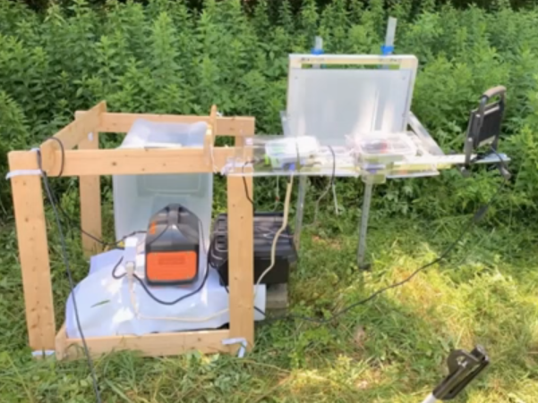
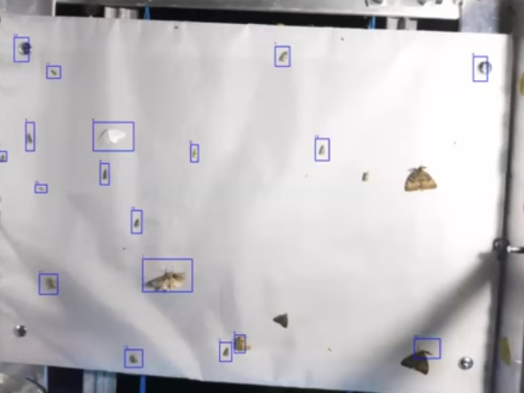

Process





My work on the mothitor spanned several months and three iterations. I spent time in the field practicing traditional moth observation methods and tested previous mothitor iterations to obtain a strong understanding of areas necessitating improvement, then planned and implemented designs in collaboration with biologists, ecologists, engineers, data scientists, and other computer scientists.